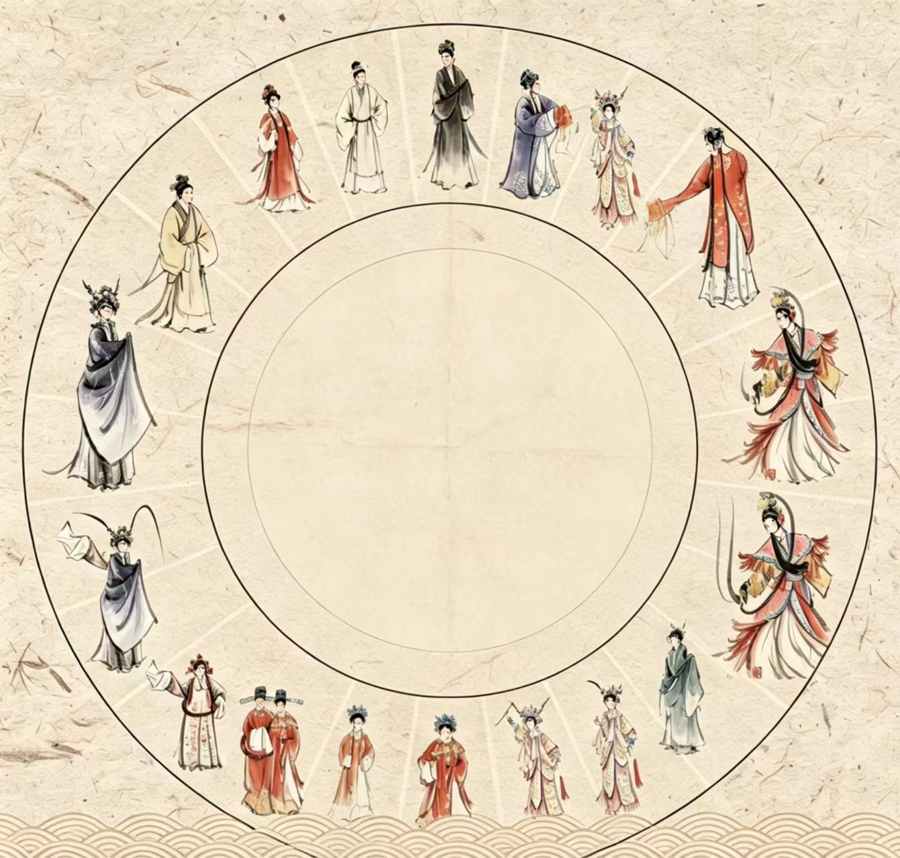
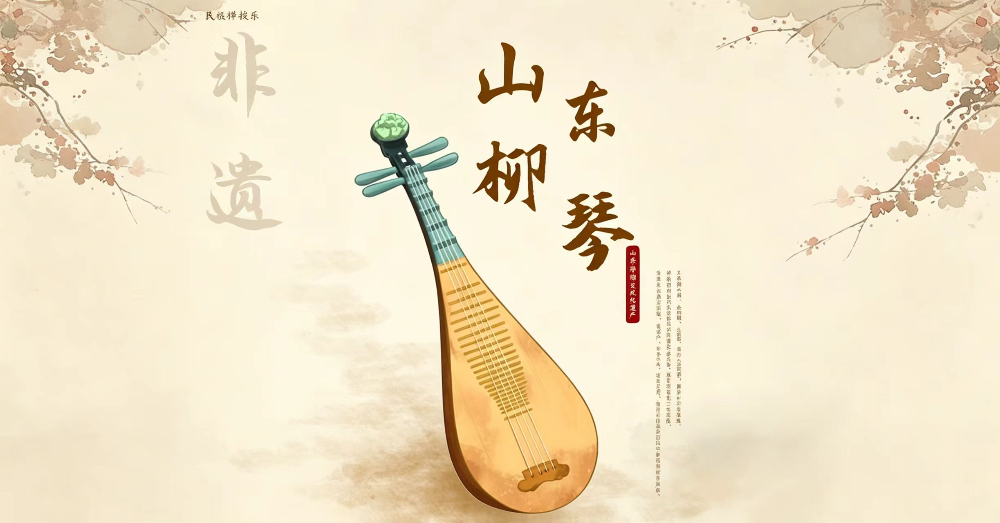
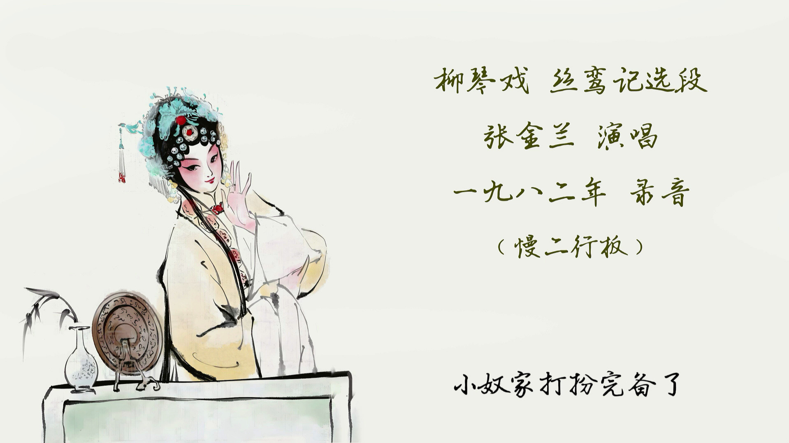
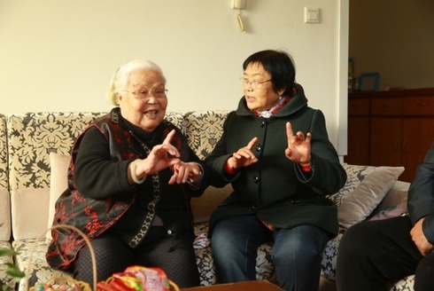
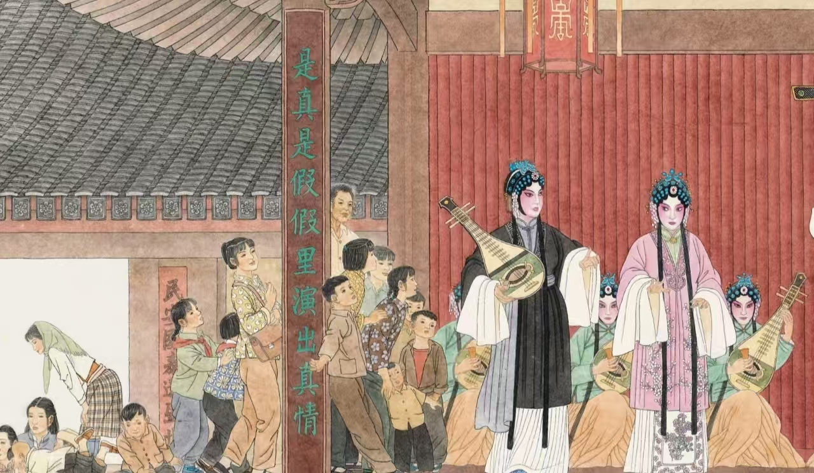
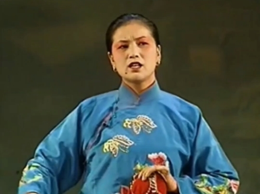
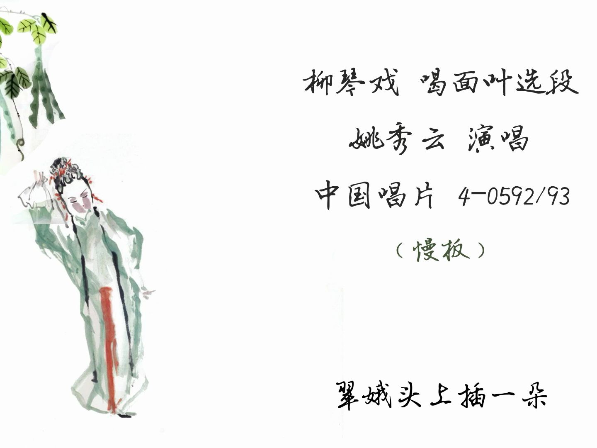

长按图片即可保存到相册
2006年列入首批国家级非物质文化遗产
柳琴戏俗称什么名字？
一把柳叶琴，三百年沂蒙乡音，本次H5将带你解锁柳琴戏的完整知识。

柳琴戏起源于哪个朝代、何地？

柳琴戏核心伴奏乐器是？

下列哪一部是柳琴戏经典传统折子戏？

临沂哪位老艺人是国家级柳琴戏代表性传承人、北派柳琴戏领军人物？

临沂专门负责柳琴戏保护、排演、公益演出的官方机构是？

柳琴戏在哪一年被列入首批国家级非物质文化遗产名录？
下列关于临沂柳琴戏说法错误的一项是？

重温开篇考题：柳琴戏的故乡是哪里？
开篇我们初识"拉魂腔"之名，走完溯源、艺术瑰宝、匠人传承、青年创新全旅程。从清乾隆田间小调，到如今国风新戏曲，一把柳叶琴承载沂蒙百年烟火。非遗从不是尘封旧物，代代传唱、人人参与，才能让拉魂腔永远留存在沂蒙大地。
一缕拉魂腔，沂蒙柳琴魂
长按海报图片可保存到相册
长按图片即可保存到相册